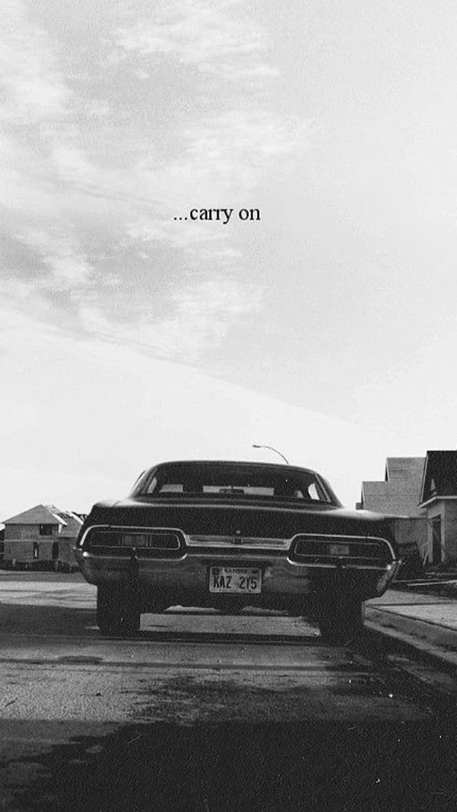
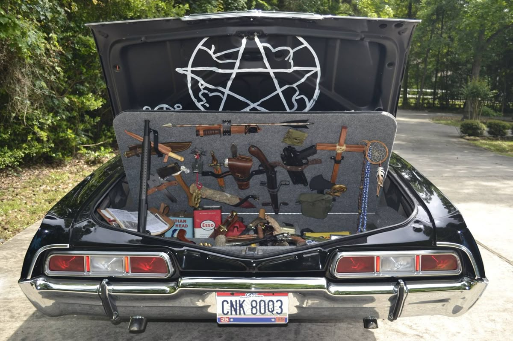
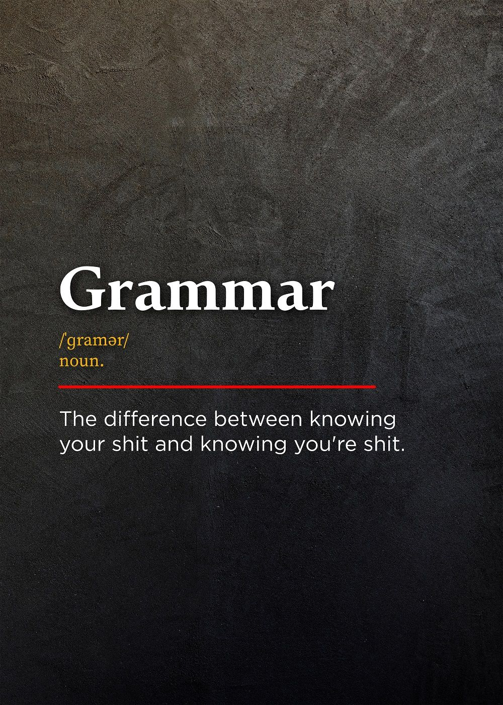
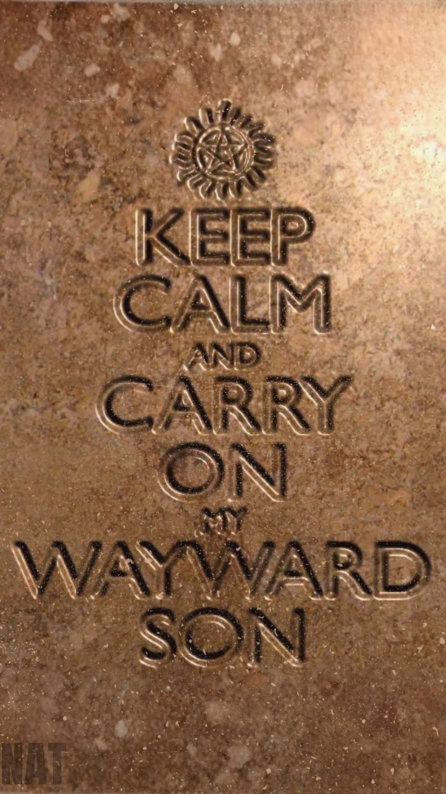

⏱
45:00
⏸ Готов (45 мин)

🕯 Complete all tasks to become a full member of the Winchester team!

The Winchesters' fake IDs — every hunter needs a new identity
👻 Fill in your details. Use the example as a guide.
👻 Fill in the blanks with the correct words. Then ask and answer the questions out loud.
1. What's your ______? (name / age / country)
2. Where ______ you live? (are / do / is)
3. Who ______ you live with? (are / do / is)
4. Do you live in a house ______ an apartment? (and / or / but)
5. ______ you have any brothers or sisters? (Are / Do / Have)
6. What ______ you do? (are / do / is)
7. What kind of music ______ you like? (are / do / is)
8. Do you listen to the radio ______ watch TV? (and / or / but)
9. What ______ you do on weekends? (are / do / is)
10. Do you go ______ with friends? (out / in / to)
11. What kind of books or magazines ______ you read? (are / do / is)
12. Have you ever ______ a museum? (visit / visited / visiting)
13. What ______ you do there? (did / do / does)
14. Why ______ you learning English? (are / do / is)
15. What's your favourite ______? (food / movie / book)

👻 Answer the questions below. Don't worry if you haven't watched the show — you can still participate!
1. Have you ever watched Supernatural?
2. If you watched it, which season did you watch up to?
3. Who is your favourite character? Why?
4. What makes you interested in Supernatural? (or why would you like to watch it?)
👻 Drag each description to the correct brother. Click 👁 to see the answers.

⬇️ Drop descriptions here
⬇️ Drop descriptions here
👻 Read both descriptions, then answer the question below.
You love classic rock music, good food (burgers, pies), and big cars. You don't like to wait. You act first and think later. Family is everything to you.
Key words: impulsive, loyal, fun-loving, protective
You love reading, doing research, and learning new things. You prefer healthy food or salads. You always think carefully before making a decision.
Key words: thoughtful, studious, careful, independent
💬 Model Dialogues — How to start
A: "I think I'm more like Dean because I love classic rock and I'm impulsive."
B: "Really? I'm more like Sam — I prefer reading and research."
A: "I love burgers and pie. I think that's very Dean!"
B: "Haha, yes! But I also like studying law, like Sam."
💡 Use these phrases: I think I'm more like... | I agree / I disagree | In my opinion...
Which brother are you more like? Why?
💡 Start with: "I think I'm more like... because..."

Everything a hunter needs — salt, guns, silver, and a devil's trap
👻 Each item has a grammar question. Click to reveal it, then answer orally.
🧳 Click on an item to open the trunk:

👻 Let's check your grammar level. Choose the right answer for each sentence.
1. I ______ from Italy.
2. She ______ to work every day.
3. They ______ watching TV right now.
4. I ______ like coffee.
5. ______ you speak English?
6. He ______ a new car.
7. We ______ to the park yesterday.
8. This is ______ interesting book.
9. I'm ______ than my brother.
10. She ______ to the store tomorrow.
11. I ______ reading when he called.
12. I ______ been to London.
13. She is the ______ student in the class.
14. There isn't ______ sugar left.
15. If it rains, I ______ stay home.
16. If I ______ rich, I would travel the world.
17. The car ______ repaired yesterday.
18. I ______ live in the countryside, but now I live in the city.
19. I ______ go to the cinema tonight.
20. She said she ______ a teacher.
Use: Habits, facts, routines, general truths
Form: I/You/We/They work | He/She/It works
Signal words: always, usually, often, sometimes, never, every day
💬 Examples: I drink coffee every morning. Water boils at 100°C.
Use: Actions happening now, temporary situations, changes
Form: am/is/are + verb-ing
Signal words: now, right now, at the moment, today, this week
💬 Examples: I'm reading a book right now. The weather is getting colder.
⚠️ Important! Non-action verbs (states) — NOT used in Continuous
love, hate, like, need, want, know, believe, prefer, agree, seem, remember, forget, hear, see, understand
✅ I love pizza. ❌ I am loving pizza.
⏳ Future Time Clauses — NO "will"!
After when, as soon as, after, before → use Present Simple, NOT "will".
✅ I will call you when I arrive. ❌ I will call you when I will arrive.
📌 From the song: "There'll be peace when you are done."

1. Have you ever heard this song before? Where?
💡 Useful words: Yes, I have / No, I haven't / I heard it in... / on the radio / in the show / on YouTube
2. Do you like this kind of music? (classic rock / 70s rock)
💡 Useful words: I love it / I like it / It's OK / I'm not a fan / because it's energetic / because it's old-fashioned
3. What do you think the song is about? Just from the title?
💡 Useful words: I think it's about... / a rebellious son / someone who makes mistakes / a journey / finding peace / family
4. What does "Wayward Son" mean? (wayward = difficult to control, disobedient)
💡 Useful words: It means... / a son who doesn't listen / someone who goes their own way / a rebel / a person who makes their own choices
5. Why do you think this song was chosen for Supernatural?
💡 Useful words: Because... / the brothers are wayward / they never give up / it's about family / it fits the mood / it's a classic
👻 Hover over the word to see the translation and meaning. Click 🔊 to listen.
"Wayward son" — непослушный, своенравный сын
📌 Используется: о человеке, который идёт своим путём, не слушается. В сериале — о Дине и Сэме.
💬 Пример: "Dean and Sam are wayward sons who chose their own path."
"Carry on" — продолжать, не сдаваться
📌 Используется: чтобы подбодрить кого-то продолжать, несмотря на трудности. В сериале — девиз Винчестеров.
💬 Пример: "Even when things are hard, you must carry on."
"Lay your weary head to rest" — отдохнуть, успокоиться
📌 Используется: чтобы сказать кому-то, что он может отдохнуть после долгого пути.
💬 Пример: "After a long day, you can lay your weary head to rest."
"Rose above" — подняться над чем-то
📌 Используется: чтобы сказать, что кто-то преодолел трудности или поднялся над хаосом.
💬 Пример: "He rose above the criticism and became successful."
"To get a glimpse" — увидеть мельком, бросить взгляд
📌 Используется: когда видишь что-то очень быстро или не полностью.
💬 Пример: "I only got a glimpse of the celebrity before she left."
"Soaring" — парящий, взлетающий
📌 Используется: о полёте или быстром подъёме (физическом или метафорическом).
💬 Пример: "The bird was soaring high in the sky." / "His career is soaring."
"Though my mind" — хотя мой разум
📌 Используется: чтобы показать контраст между тем, что есть, и тем, что могло бы быть.
💬 Пример: "Though my mind told me to stop, I continued."
"I set a course for" — я взял курс на, я направился к
📌 Используется: когда кто-то выбирает направление или цель.
💬 Пример: "We set a course for the island." / "He set a course for success."
"Nothing equals the splendor" — ничто не сравнится с великолепием
📌 Используется: чтобы сказать, что что-то настолько прекрасно, величественно или впечатляюще, что ничто другое не может с ним сравниться.
💬 Пример: "When you're exhausted, nothing equals the comfort of your own bed."
💬 Пример: "Nothing equals the feeling of finishing a big project."
💬 Пример: "For me, nothing equals a good cup of coffee in the morning."
💬 Пример: "The beauty of the sunset equals the splendor of a masterpiece."
💬 Пример: "Watching the stars in the desert — nothing equals that splendor."
📝 Синонимы: unmatched, unparalleled, incomparable, second to none, beyond compare
"Vanity" — тщеславие, суетность
📌 Используется: в двух значениях: (1) чрезмерная гордость своей внешностью или достижениями; (2) бесполезность, тщетность чего-либо.
💬 Пример (тщеславие): "Her vanity made her spend hours in front of the mirror."
💬 Пример (тщеславие): "His vanity wouldn't let him admit he was wrong."
💬 Пример (тщетность): "The vanity of trying to control everything exhausted him."
💬 Пример: "All his wealth was just vanity — it didn't make him happy."
💬 Пример: "She looked in the mirror with vanity, admiring her reflection."
📝 Синонимы (тщеславие): conceit, egotism, pride, narcissism, self-importance
📝 Синонимы (тщетность): futility, uselessness, pointlessness, emptiness, worthlessness
👻 "Carry On Wayward Son" by Kansas — the iconic song of the Winchester brothers.
👻 Let's practise the grammar and vocabulary from "Carry On Wayward Son".
📌 В песне: "Though my eyes could see, I still was a blind man." — Показывает контраст (хотя / несмотря на то, что).
Contrast with "Though"
📝 Exercise 1A: Complete the sentences with though. Connect the two contrasting facts.
📌 Combine the ideas using Though. Change the present situations into the past tense (согласование времён)!
📌 Put the words in the correct order. Attention! Change the verbs in brackets into the correct Past Simple forms.
📌 В песне: "I hear the voices when I'm dreaming, I can hear them say..." — Почему "them", а не "they"?
Subject vs Object Pronouns
📌 Write they or them in each gap.
📌 В песне: "There'll be peace when you are done." — Конструкция для предсказаний и обещаний + правило времени.
Future Simple + Time Clauses
💡 "There'll be" — это сокращение от "There will be". Используется для предсказаний и обещаний о будущем.
⚠️ "when you are done" — в частях предложения, которые начинаются со слов when (когда) или if (если), НЕЛЬЗЯ использовать "will", если речь идет о времени или условии. Вместо "will" мы используем Present Simple.
📌 Write the correct form of the verb in brackets. Pay attention to the subject singular/plural!
📌 В песне: "There'll be peace when you are done."
Future Time Clauses
⚠️ Важно! На русский мы переводим эту часть будущим временем: "когда ты закончишь". Но в английском языке в придаточных времени (после when, as soon as, after, before) НЕ ИСПОЛЬЗУЕТСЯ will!
✅ Вместо этого — Present Simple: when you are done.
💡 "You are done" — это устойчивое выражение, которое означает «ты закончил», «твоё дело сделано».
✅ Правильно
"I will call you when I arrive."
❌ Неправильно
"I will call you when I will arrive."
📖 "You are done" — это пассивный залог (или прилагательное, описывающее состояние). Буквально: "ты сделан", но по смыслу: "ты закончил".
Real-Life Examples:
📌 Open the brackets using the correct form of Present Simple (Active or Passive). Do NOT use "will"!
Interrupted Processes & "Ever" with Comparatives
When we combine Past Continuous and Past Simple with the word "but", we describe an ongoing past process that was suddenly interrupted or ruined by a single, completed event. Additionally, putting the word "ever" right before a comparative adjective (like higher, colder, faster) creates an advanced, poetic structure that means "more and more over time" or "continuously."
📌 Choose Past Continuous for the ongoing process and Past Simple for the sudden interrupting event.
📌 Put the verbs into the correct past tense (Past Continuous or Past Simple) to match the song structure.
📌 Study the definitions and real-life examples, then apply them in a completely new context below!
Carry on /ˈkæri ɒn/
продолжать делать что-то, несмотря на трудности, не сдаваться
💬 "Even when you want to quit, you must carry on."
Wayward /ˈweɪwərd/
своенравный, капризный, трудноуправляемый, непослушный
💬 "The captain struggled to control the wayward vessel in the storm."
Weary /ˈwɪəri/
усталый, изнуренный (физически или морально от ситуации)
💬 "The travelers were incredibly weary after their long journey."
Masquerading (as) /ˌmæskəˈreɪdɪŋ æz/
притворяться кем-то, тайно выдавать себя за другого человека
💬 "Be careful, this malicious software is masquerading as a system update."
Tossed (about) /tɒst əˈbaʊt/
швыряемый из стороны в сторону, находящийся в сильной неопределенности
💬 "The small rescue boat was violently tossed about by rough autumn waves."
📝 Production Task: Context Clues Challenge
📌 Read the sentences carefully. Analyze the semantic context and type the correct keyword in its proper form.
👻 Listen to the song and fill in the missing words.
1. What is the mood of the song? How does it make you feel?
💡 Useful words: The mood is... / It makes me feel... / energetic / powerful / sad but hopeful / determined / emotional / inspired
2. Why do you think this song is perfect for Supernatural?
💡 Useful words: Because... / it's about never giving up / the brothers are wayward sons / it matches the theme of the show / it's epic and emotional / it's about family and sacrifice
3. What words or phrases are repeated in the song? Why?
💡 Useful words: The repeated phrase is... / "Carry on" is repeated because... / it emphasizes the message / it's the main idea of the song
4. What does "carry on" mean to the Winchester brothers?
💡 Useful words: It means... / to keep hunting / to never give up / to protect each other / to continue the family mission / to survive despite everything
5. What is your favourite line from the song? Why?
💡 Useful words: My favourite line is... / because it's inspiring / because it reminds me of... / it's very emotional / it's powerful

👻 The legendary 1976 rock anthem "Carry On Wayward Son" by Kansas is more than just a classic song. It is an incredible tool for mastering English. Its powerful metaphors perfectly describe the tragic, monster-hunting lives of Sam and Dean Winchester from Supernatural, and the lyrics also work as practical, real-world conversational English.
📖 This guide explains every single line of the song — analyzing its hidden depth, its meaning, grammar, and how you can apply these structures to your own daily life.
1. "Carry on, my wayward son"
The Deep Meaning: To "carry on" means to keep going despite difficulties, tragedy, or fate. A "wayward" person is someone who is difficult to control, who goes their own way: unpredictable, rebellious. In Supernatural, this perfectly describes the Winchester brothers — constantly fighting, breaking the rules of Heaven and Hell, and refusing to give up.
💬 Real-Life Application (How to use in real life):
📌 Carry on: "Sorry for interrupting, please carry on."
📌 Carry on: "Even when things are hard, you must carry on."
📌 Wayward: "He was a wayward teenager, but now he's a doctor."
📌 Wayward: "My cat is very wayward — she never listens."
2. "There'll be peace when you are done"
The Deep Meaning: For an outsider, this looks like a promise of a happy ending. For a hunter, it is a tragic omen (a sad truth). The only way the battle truly ends is with death or the end of the road.
⚠️ Grammar Alert (Future Time Clause):
Notice the structure There'll be peace [Future] when you are done [Present Simple]. Even though you are talking about the future, you cannot use "will" after time links like when, as soon as, before, or after. = After words like when, as soon as, before, after — we use Present Simple, NOT "will".
💬 Real-Life Application:
📌 "There'll be no problems as long as you follow the instructions."
📌 "There'll be a celebration when we finish this project."
📌 "I will call you when I arrive."
📌 "Please wait here until I come back."
3. "Lay your weary head to rest"
The Deep Meaning: A call to find comfort after an overwhelming struggle. "Weary" means very tired — not just physically, but mentally and emotionally exhausted. This line is an invitation to find rest after a long struggle.
💬 Real-Life Application:
"Weary" means much more than just tired. It implies being physically, mentally, and emotionally exhausted.
📌 "After a 12-hour shift, I was completely weary."
📌 "I am weary of all this drama at work."
📌 "She looked weary after weeks of studying for exams."
4. "Don't you cry no more"
The Deep Meaning: A comforting command to stop grieving and stand strong.
⚠️ Grammar Alert (Double Negative & Imperative):
Standard English grammar says double negatives (don't + no) are incorrect, but in conversational American English and rock lyrics, it is frequently used for strong emotional emphasis. Adding "you" to an imperative (Don't you...) makes the command highly personal or comforting.
💬 Real-Life Application:
📌"Don't you worry about what they think."
📌 "Don't you give up on your dreams!"
📌 "Don't you worry — everything will be fine."
📌 "Don't you forget about me!"
5. "Once I rose above the noise and confusion"
The Deep Meaning: Stepping back from the chaotic details of daily life to see the "big picture" or find clarity.
💬 Real-Life Application:
"Rise above" is an excellent phrasal verb used when you decide not to let petty arguments, toxic people, or bad luck ruin your mood.
📌"You need to rise above the office gossip and focus on your work."
📌"I chose to rise above his rude comments and stayed polite."
📌 "She rose above all the criticism and became successful."
📌 "It's important to rise above petty arguments."
6. "Just to get a glimpse of beyond this illusion"
The Deep Meaning: Realizing that the world around you might not be what it seems—a core theme in a show where monsters hide in plain sight.
💬 Real-Life Application:
A "glimpse" is a very quick look. "Beyond" means on the further side of something. The line means trying to see what's really there, behind the false appearance of things.
📌"I only caught a glimpse of the new UI design, but it looks promising."
📌"The results went far beyond our expectations."
📌 "She got a glimpse of her future and it inspired her."
7. "I was soaring ever higher, but I flew too high"
The Deep Meaning: A classic reference to the myth of Icarus — he flew too close to the sun and fell. It means being overconfident, taking too many risks, and then failing.
⚠️ Grammar Alert (Past Continuous vs. Past Simple):
This line brilliantly demonstrates how a long background action (I was soaring) is suddenly cut short by a definitive past event (but I flew).
💬 Real-Life Application:
📌"I was doing great at the interview, but I made a terrible mistake at the very end."
📌"We were expanding our business rapidly, but we ran out of budget."
📌 "She was driving too fast and crashed."
8. "Though my eyes could see, I still was a blind man / Though my mind could think, I still was a mad man"
The Deep Meaning: This highlights an intense internal crisis. You can have perfect vision and high intelligence, but still be completely blind to your own destiny, or act completely irrational out of love, duty, or obsession.
⚠️ Grammar Alert (Concession with "Though"):
Placing "Though" at the beginning of a sentence sets up a strong contrast, showing that a surprising result happened despite a specific fact. "Though" means "although" — it shows a contrast between two ideas.
💬 Real-Life Application:
📌 "Though he had a GPS, he still got lost."
📌 "Though she practised every day, she felt nervous."
📌 "Though it was raining, we went for a walk."
9. "Masqueraded as a man with a reason"
The Deep Meaning: Faking confidence. Pretending you have everything under control and know exactly what you are doing, even when you feel completely lost inside.
💬 Real-Life Application:
"Masquerade as" means to falsely pretend to be an expert, a professional, or someone of higher status. Pretending to be confident and in control, even when you feel completely lost inside.
📌"Be careful online; many scammers masquerade as bank agents."
📌"Sometimes I feel like I'm just masquerading as a real adult."
📌 "He masqueraded as an expert, but he knew nothing."
10. "My charade was the event of the season"
The Deep Meaning: A "charade" is a fake show, an act. The singer is joking that his act of pretending to be okay was so obvious that everyone noticed.
💬 Real-Life Application:
📌"Let's stop this charade and say what we actually think."
📌"The whole interview process felt like a charade because they already chose an internal candidate."
📌 "The meeting was a charade — they already made a decision."
📌 "I'm tired of this charade. Let's be honest with each other."
11. "And if I claim to be a wise man, well, it surely means that I don't know"
The Deep Meaning: The ultimate rock-and-roll nod to the Socratic paradox. True wisdom begins with admitting your own limitations. The moment you brag about knowing everything, you prove that you actually know nothing. = True wisdom begins when you admit you don't know everything. If you brag about knowing everything, you prove you know nothing.
💬 Real-Life Application:
📌"He claims to be a senior developer, but he struggled with basic syntax."
📌"If someone claims to be an absolute expert in AI, they probably don't know its limitations."
📌 "If someone claims to be perfect, they're lying."
📌 "She claims to be a professional, but she made many mistakes."
12. "On a stormy sea of moving emotion / Tossed about, I'm like a ship on the ocean"
The Deep Meaning: This striking visual captures the feeling of being overwhelmed by circumstances beyond your control. It represents the chaotic lifestyle of a hunter, constantly dragged from one crisis to another.
💬 Real-Life Application:
To be "tossed about" means to be thrown around violently or forced to constantly change plans due to outside forces.
📌 "My travel plans were completely tossed about by the strike."
📌 "Employees feel tossed about by all the changes."
📌 "I feel tossed about by all these new responsibilities."
13. "I set a course for winds of fortune"
The Deep Meaning: Making a decision to change your life, take a risk, and go after success and a better future.
💬 Real-Life Application:
To "set a course for [something]" means to plan a specific direction for your life, career, or project.
📌 "She set a course for a career in technology."
📌 "The company set a course for international growth."
📌 "After graduation, he set a course for a new life abroad."
14. "Nothing equals the splendor"
The Deep Meaning: At the end of the journey, the sacrifice, the long road, and staying true to your mission brings a level of honour that nothing else can match.
💬 Real-Life Application:
Use the structure nothing equals... to express absolute, unmatched admiration for a high-quality experience, product, or feeling.
"📌When you're exhausted, nothing equals the comfort of your own bed."
📌 "Nothing equals the feeling of finishing a big project."
📌 "For me, nothing equals a good cup of coffee in the morning."
👻 Click on the answer you think is correct. Check your understanding!
1. What does "wayward" mean in the song?
2. What does "weary" mean?
3. What does "carry on" mean?
4. What does "rise above" mean?
5. What is a "glimpse"?
6. What does "though" mean in the song?
7. What does "masquerade as" mean?
8. What is a "charade"?
9. What does "tossed about" mean?
10. What does "set a course for" mean?
👻 Answer these questions to complete your first mission. Write your thoughts in English!
1. What was the most difficult part of the lesson for you?
💡 Examples: grammar, vocabulary, speaking, understanding the song
2. What new word, phrase, or grammar rule did you learn today?
💡 Examples: "Carry on", "wayward", "out of practice", "though"
3. Are you more like Dean or Sam? Why? (Compare with your earlier answer!)
💡 Useful language: I think I'm more like... because... / In the lesson, I said... but now I think...
4. What are you most excited about for the next lesson (Unit 1A)?
💡 Ideas: watching Supernatural clips, learning about food, practising grammar, speaking more
"There'll be peace when you are done."
Вы завершили первый урок: Supernatural English · Unit 1A
📋 Self-Check Checklist:
📊 Your Progress:
🕯 Все задания проверены. Охотники, вы справились! 🕯
💾 Сохранит все ваши ответы в текстовый файл
⚠️ This will clear all your answers and progress.